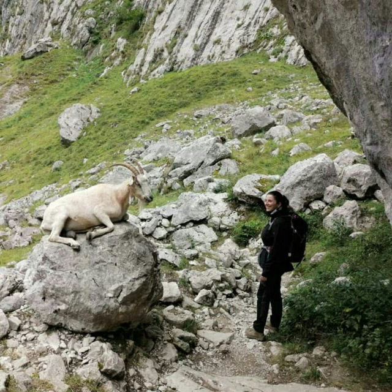

| Sobre mi |
|---|
| Holaaa! Me llamo Arantxa Fernández. Me encantan las aventuras, la naturaleza, cocinar, aprender nuevas recetas y, por supuesto, adoro comer. |
| Creación |
| En esta web iré añadiendo poco a poco las recetas que tanto tiempo llevo guardando en notas de papel, del móvil y en la aplicación de COOKmate. La idea es ir creando mi propio recetario y poder disponer de él siempre que lo necesite. |
| Contacto |
| No dudéis en contactarme para cualquier duda o sugerencia a través del formulario de contacto. |